Aurora
Product-launch glow — wide display type, glass panels and northern-light gradients.
- Best for
- product launches, startup demo days, AI and tech announcements, feature reveals
- Avoid for
- printed handouts, academic seminars
- Typefaces
- Unbounded · Onest · JetBrains Mono
- Feel
- futuristic, premium, energetic, optimistic · dark · cinematic motion
- bg
#07131A - ink
#EAF6F4 - accent
#5EF0C4
Ask Claude for it by name:
Make a presentation about … in the Aurora themeAll 31 slides in Aurora
Every layout from the showcase lecture. Click a frame to open it in the live deck.
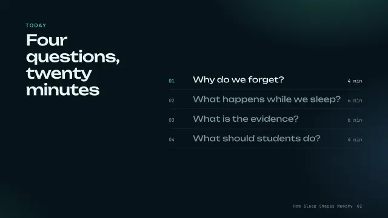
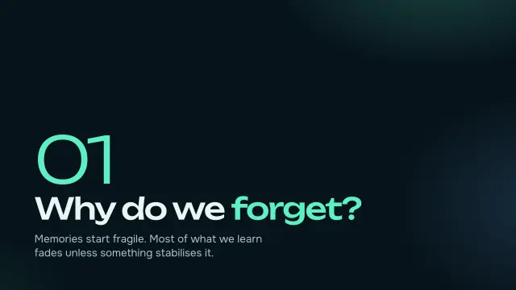
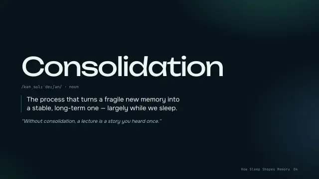
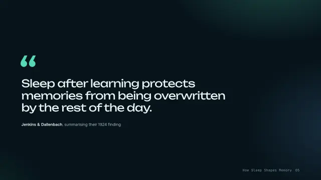
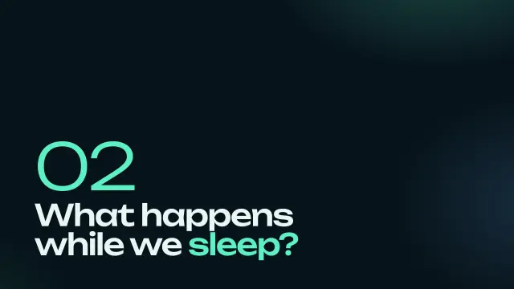
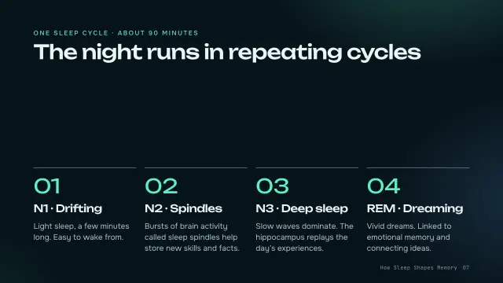
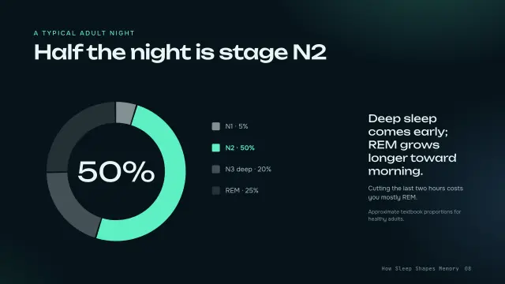
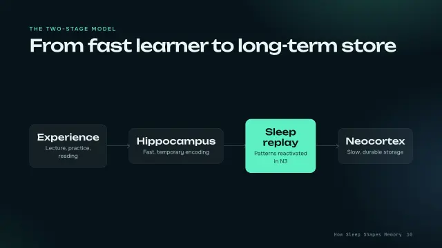
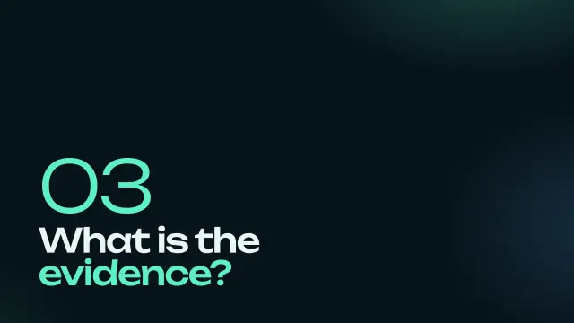
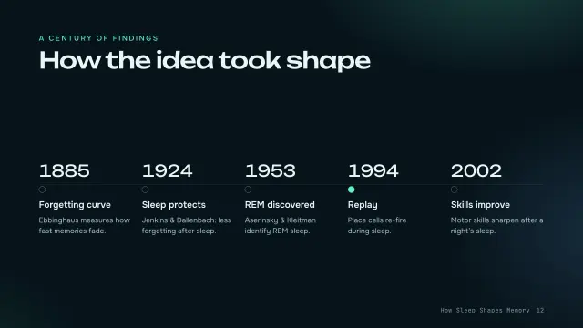
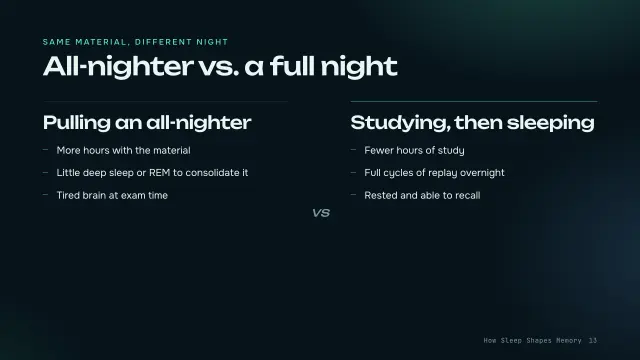
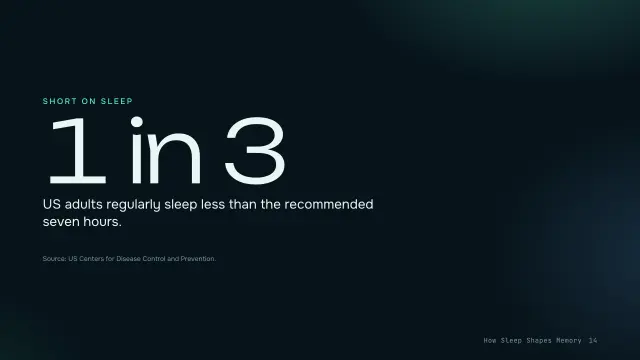
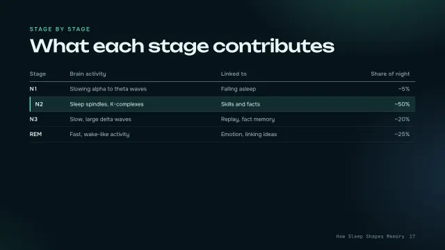
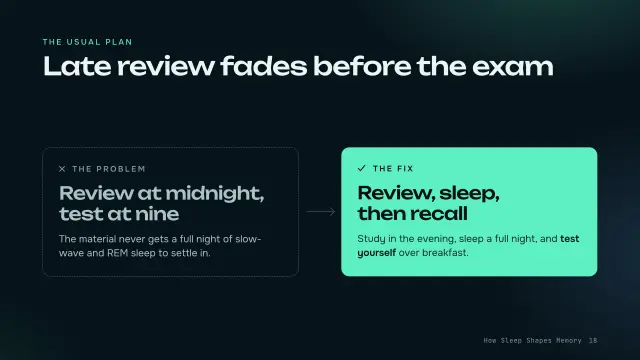
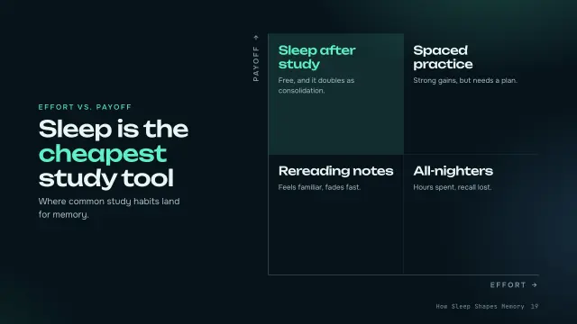
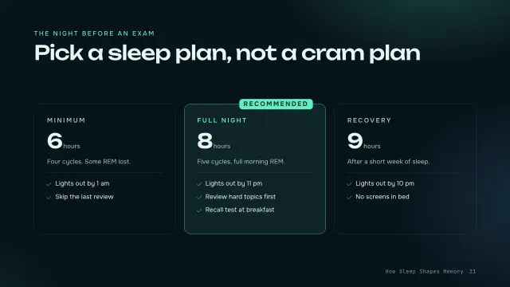
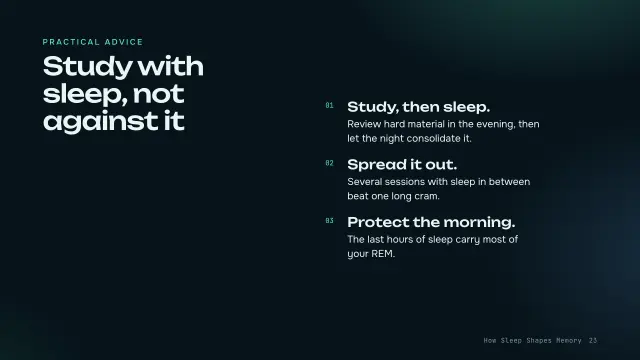
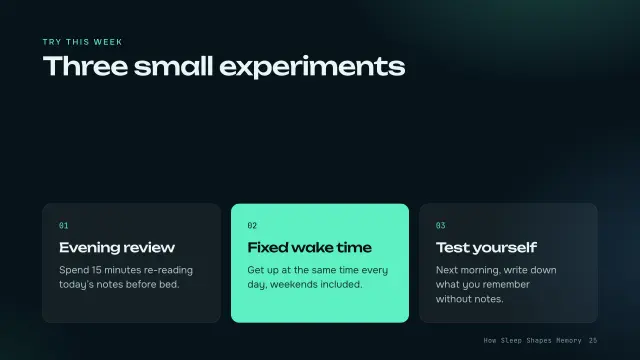
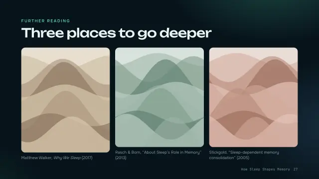
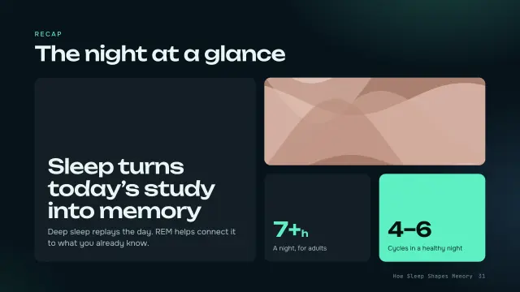